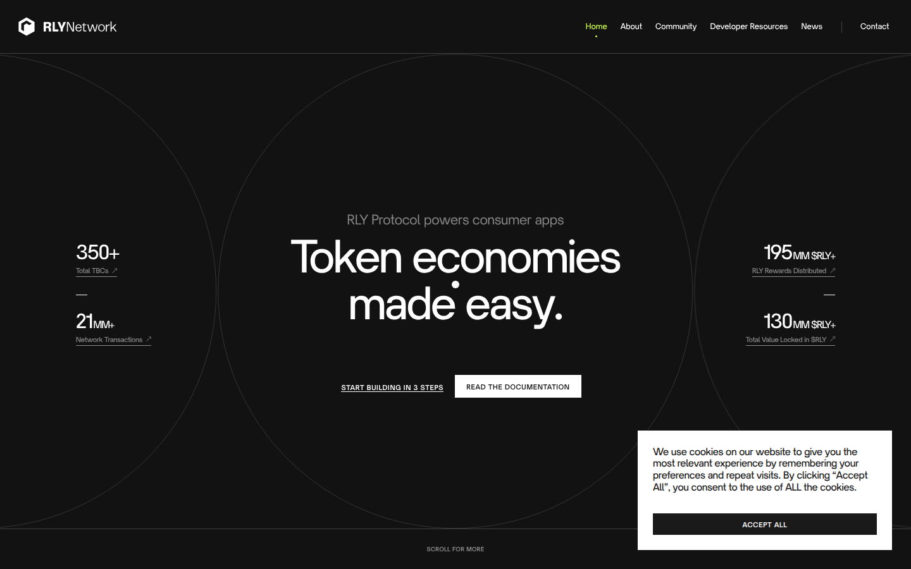

web3 protocol · charcoal + acid lime · hairline overlapping circles · flanking stat columns · inline paragraph-in-headline · outlined lime pill tags · tiny caps buttons · cursor dot
#121212#ffffff#1a1a1a#ffffff#272727#909090#272727#ffffff#121212#ceff45#121212#ceff45